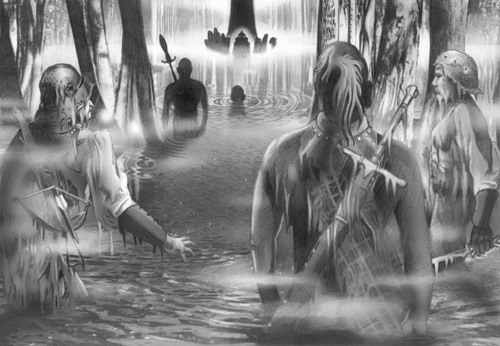
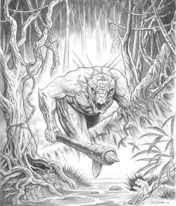

Creata artificialmente questa enorme distesa palustre di acqua salmastra rappresenta la principale difesa naturale del Granducato di Karsar. Estendendosi dalle alture del Massiccio Isolato alle coste del Golfo della Civiltà questa zona palustre chiude l'accesso alla penisola di Karsar via terra, se è fatta eccezione per la sottile striscia di terrapieno dalla larghezza variabile (da 20 a 50 metri) che conduce all'interno della palude congiungendo il Castello di Arlos alla zona interna ed a quella esterna del Granducato.
La zona di acqua salmastra degli Acquitrini Artificiali rappresenta oggi una delle tre maggiori aree palustri del Sud-Arelia (assieme alle Distese Palustri nei Territori dei Semi-Umani e alle Lande Umide al confine Est del Granducato di Trinsegar). Questi chilometri di acquitrini malsani sono divenuti l'habitat naturale di orrende creature delle paludi che dominano la zona. Il governo pergariano scelse volutamente di lasciare occupare questa zona da simili esseri per trasformare quest'area in un confine invalicabile.
Le autorità pergariane, infatti, decisero di permettere lo stanziamento in questa vasta zona palustre di pericolose creature trasportate, anche dal Nordor, per opera della Società della Scienza che si occupò del popolamento dell'area. In particolare fu permesso lo stanziamento nell'area di alcuni villaggi di uomini-lucertola. Nonostante le ultime stime rispetto lo loro popolazione risalgano ad oltre 50 anni or sono, si ritiene che la popolazione di queste creature ammonti ad oltre 500 maschi adulti combattenti. Con il passare degli anni le zone palustri lontane dal terrapieno sono divenute inaccessibili ed altamente ostili, non di rado chi si inoltra in queste terre malsane non fa più ritorno. Il Primo Generale Imperiale che comanda il Corpo di Guardia presso il Castello di Arlos ha il compito di mantenere i contatti con i capi degli umanoidi stanziatisi nelle paludi. Costui adempie a questo compito con l'ausilio di personale altamente specializzato in grado di muoversi con maestria nel territorio palustre. In base agli accordi stipulati con questi capi umanoidi, le zone palustri sono di loro competenza esclusiva potendo costoro agire in indisturbati e senza il rispetto delle leggi imperiali. In compenso, questi esseri garantiscono la sicurezza del passaggio lungo il terrapieno, l'eliminazione di chi tenta di attraversare il confine senza autorizzazione, nonché il loro intervento in caso di guerra contro le truppe di invasione.

Non è raro che avventurieri di media esperienza, partendo da Campo Imperiale, si inoltrino nelle paludi in cerca di tesori ed esperienza. In questa zona, inoltre, esperti erboristi si riforniscono di rare piante palustri (Herbalism check bonus +1). Infine, si vocifera che la Società della Scienza esegua orribili esperimenti in questa zona e sulle creature che ivi risiedono.
Con la nascita dell'Impero la zona degli Acquitrini Artificiali è stata regolamentata con una speciale legge imperiale che la ha trasformata in una sorta di territorio semi-federato.
Legge Imperiale di federazione degli Acquitrini Artificiali
"La
zona degli Acquitrini Artificiali è soggetta alla presente legislazione.
Tutti i federati hanno piena libertà di movimento in tutto il territorio degli
Acquitrini Artificiali e non sono soggetti alle leggi imperiali. Costoro non
possono lasciare il territorio degli acquitrini senza specifico permesso
rilasciato dal Primo Generale Imperiale al comando del Corpo di Guardia del
Castello di Arlos. I trasgressori saranno soggetti a legge marziale e saranno
giudicati da quest'ultimo. Costui potrà determinare la loro pena senza alcuna
limitazione, ivi compresa la pena di morte.
Tutti i cittadini dell'Impero che accedono alla zona degli Acquitrini Artificiali lo fanno a loro rischio e pericolo e non saranno ritenuti sotto protezione imperiale, ciò nonostante dovranno continuare a rispettare la legislazione pergariana e saranno soggetti alle autorità pergariane."
Regole particolare per gli Acquitrini Artificiali
* La nebbia palustre: In questa zona salmastra, particolarmente umida, vi è sempre un denso strato di nebbia e di foschia. La visibilità nella zona cambia con il passare delle ore, per determinarla si consideri che il raggio visivo è pari a 20 + 2d20 metri.
* Il movimento nella palude: Muoversi in questa zona è particolarmente difficile, quasi sempre si cammina con quasi 1 metro d'acqua ed in molte zone la profondità della palude è di diversi metri. Per questo motivo si consideri un moltiplicatore di movimento giornaliero pari a * 6 ed un movimento tattico normale per le creature di taglia huge o gargantuan, pari ad 1/2 per le creature di taglia large, pari ad 1/3 per quelle di taglia medium, pari ad 1/4 per le creature di taglia small, le creature di taglia tiny, invece, devono nuotare.